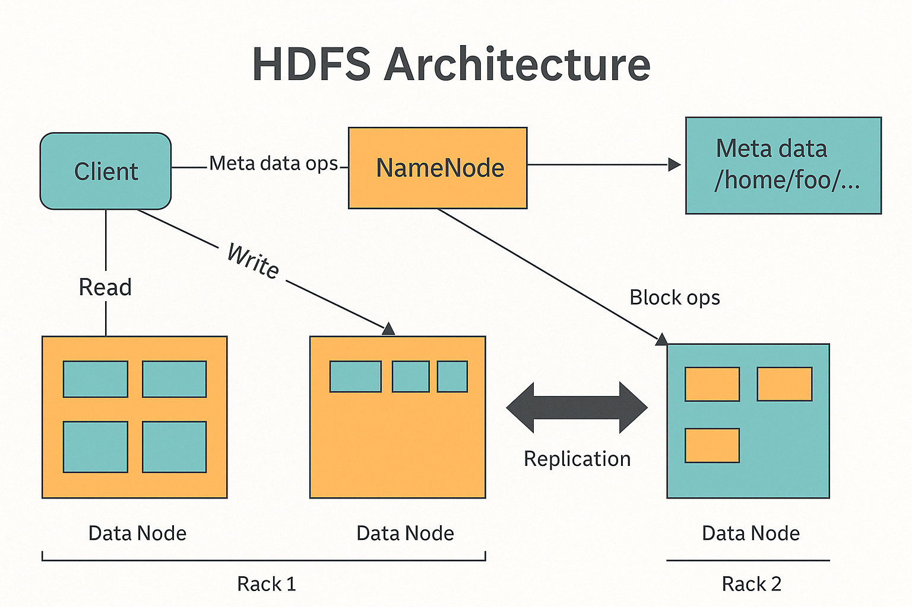
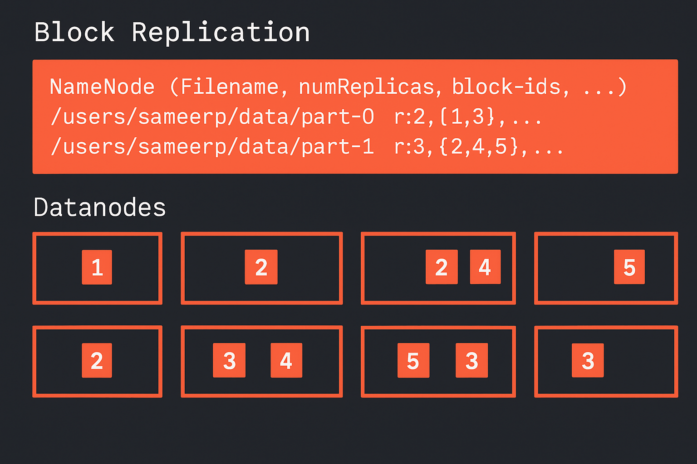
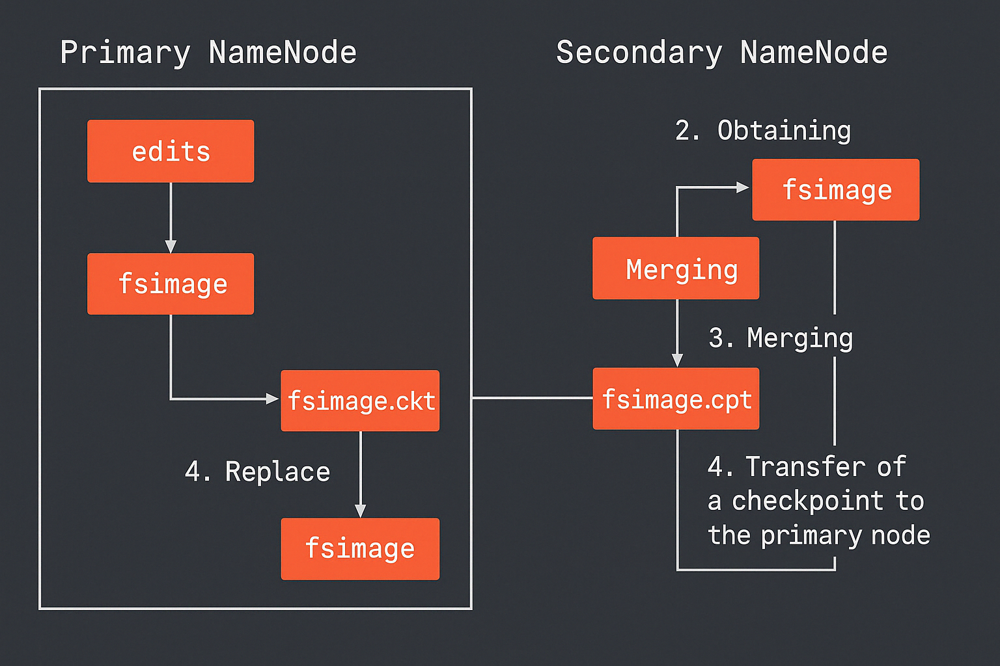

Куратор раздела
Подвальный Артем, Data Engineer/Data Scientist
Хочешь перейти в дата-инженерию, но не знаешь с чего начать? Пиши - составим резюме, продумаем твое развитие https://t.me/ampodvalniy
Хочешь улучшить текущий раздел, внести недостающее или поправить формулировку? Предлагай PR и тегай @Artemlin6231
Немного об этой главе
Понимание Hadoop Distributed File System - одна из наиболее часто встречающихся тем на собеседованиях, так что разбираться в ней стоит каждому Дата-инженеру.
Приятного изучения)
Hadoop
Hadoop Distributed File System — это один из фундаментальных компонентов в экосистеме обработки больших данных. Он стал краеугольным камнем для дата-инженеров по всему миру и используется в самых разных системах: от банков и телекома до стриминговых платформ и дата-центров.
Почему HDFS стал таким важным:
- Распределённое хранение данных: большие файлы разбиваются на блоки и автоматически распределяются по множеству узлов.
- Отказоустойчивость: благодаря репликации блоков (по умолчанию 3 копии), данные не теряются при сбоях узлов.
- Масштабируемость: можно начинать с нескольких серверов и масштабироваться до тысяч машин без изменения архитектуры.
- Параллельная обработка: HDFS идеально сочетается с фреймворками типа MapReduce, позволяя выполнять анализ "на месте", рядом с данными.
- Ориентирован на потоковую запись: файлы в HDFS пишутся один раз и читаются много раз — это идеально для аналитических систем.
Архитектура HDFS:

Основные компоненты системы
Client (Клиент)
Клиент — это пользователь или приложение, взаимодействующее с HDFS. Он не пересылает данные через управляющий узел (NameNode), а напрямую обменивается ими с узлами хранения — DataNode. Однако, перед этим клиент обращается к NameNode для получения информации о размещении данных.
NameNode
NameNode — главный управляющий узел системы. Он хранит метаинформацию, такую как структура каталогов, имена файлов, расположение блоков, права доступа и другую служебную информацию. Самих данных на NameNode нет — только информация об их размещении. Все операции по чтению и записи начинаются с запроса клиента к NameNode.
DataNode
DataNode — рабочие узлы, на которых физически размещаются блоки данных. Каждый файл в HDFS разбивается на блоки (обычно по 128 или 256 МБ), которые затем распределяются между несколькими DataNode. Эти узлы обрабатывают запросы клиента на чтение и запись блоков, а также участвуют в процессе репликации.
Особенности HDFS
В отличие от традиционных файловых систем, HDFS поддерживает только однократную последовательную запись: файл можно записать только один раз и только одним процессом. Это связано с тем, что система ориентирована на хранение и обработку очень крупных файлов (чаще всего больше 10 ГБ). Каждый файл разбивается на крупные блоки — по умолчанию 128 МБ, но можно увеличить до 256 МБ. Эти блоки представляют собой бинарные объекты (BLOB), физически размещённые на DataNode.
Поддерживаемые операции в HDFS
HDFS поддерживает базовый набор операций для работы с файлами в распределённой среде. Это включает запись новых данных, чтение существующих файлов, удаление ненужной информации, а также автоматическую репликацию данных для обеспечения надёжности и отказоустойчивости системы.
Процесс записи данных
При записи файла клиент сначала обращается к NameNode, запрашивая список подходящих DataNode, куда можно разместить блоки файла. После получения этого списка клиент напрямую отправляет блоки данных на указанные узлы. DataNode сохраняют полученные блоки и автоматически начинают процесс репликации — копируя блоки на другие узлы, согласно заданному фактору. После успешной записи и репликации клиент получает подтверждение об успешном завершении операции.

Репликация в HDFS
Для обеспечения надёжности и защиты от потери данных HDFS использует механизм репликации: каждый блок файла сохраняется в нескольких копиях. По умолчанию применяется три реплики (фактор репликации = 3). Система устроена так, что ни один DataNode не хранит более одной копии одного и того же блока. Обычно HDFS размещает две копии в пределах одной стойки, а третью — в другой стойке, чтобы сохранить данные даже при выходе из строя целой стойки.

Secondary NameNode
Несмотря на своё название, Secondary NameNode не является резервной копией основного узла. Его задача — периодически создавать контрольные точки (checkpoints), объединяя журнал операций (edits) с текущим образом файловой системы (fsimage) в единый файл. Это помогает снизить нагрузку на NameNode и упрощает его перезапуск. Secondary NameNode работает отдельно и должен быть настроен вручную.
Проблема мелких файлов
Маленькие файлы представляют собой серьёзную проблему для HDFS, так как каждый из них требует хранения отдельной записи в оперативной памяти NameNode. Поскольку NameNode ограничен объёмом доступной памяти, большое количество мелких файлов может привести к её исчерпанию. Это снижает общую производительность системы и ограничивает её масштабируемость. Поэтому HDFS гораздо эффективнее работает с крупными файлами, объединяющими множество мелких данных.
💻 CLI-команды HDFS
| Категория | Команда | Описание |
|---|---|---|
| Работа с файлами | hdfs dfs -ls /путь |
Просмотр содержимого директории |
hdfs dfs -mkdir /путь |
Создание новой директории | |
hdfs dfs -put файл /hdfs/путь |
Загрузка файла в HDFS | |
hdfs dfs -get /hdfs/файл путь |
Скачивание файла из HDFS | |
hdfs dfs -cat /файл |
Просмотр содержимого файла | |
hdfs dfs -rm /файл |
Удаление файла | |
hdfs dfs -rm -r /каталог |
Рекурсивное удаление каталога | |
hdfs dfs -mv /старый /новый |
Переименование или перемещение файла | |
| Права и доступ | hdfs dfs -chmod 755 /путь |
Изменение прав доступа |
hdfs dfs -chown пользователь:группа /путь |
Изменение владельца | |
hdfs dfs -chgrp группа /путь |
Изменение группы | |
| Репликация | hdfs dfs -setrep -w 2 /файл |
Установка фактора репликации |
hdfs dfs -getrep /файл |
Просмотр текущего уровня репликации | |
| Инфо о системе | hdfs dfsadmin -report |
Информация о состоянии DataNode |
hdfs dfs -du -h /путь |
Размер директории/файла | |
hdfs dfs -df -h |
Использование пространства в HDFS | |
hdfs dfs -count /путь |
Количество файлов, директорий и байт |
Типичные вопросы на собеседовании
- Что такое DataNode и NameNode?
- Что такое Secondary NameNode?
- Какие операции можно делать с файлами?
- Можно ли добавить информацию в файл на hdfs?
- Проблема мелких файлов что это такое?